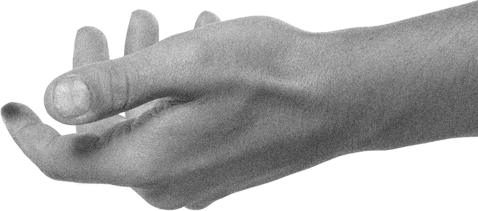

специальный проект
ч
м
2
0
1
8
100%потери голоса
Начинай учить азбуку Морзе, ведь такими темпами ты скоро вообще не сможешь разговаривать. Чемпионат Мира ещё не закончился, России ещё пригодится твой голос, так что на следующийматч прихвати Гомеовокс — пара таблеток и окружающие снова услышат твой голос. Иначе на работе придётся жестами объяснять начальнику, почему ты снова опоздал. Мы пробовали так делать — не лучший вариант, поверь.

ч
м
2
0
1
8
Если ты думаешь, что проблемы с голосом могут возникать только от избыточного (и не самого выразительного) пения в караоке и криков во время футбола, то ты ошибаешься. К сожалению, потерять голос, куда проще чем кажется на первый взгляд.

Алкоголь, курение, аллергия и даже частые авиаперелеты — всё это может придать твоему голосу томную хрипотцу, которая будет нравиться твоей девушке, но отпугивать всех клиентов на работе. Препарат Гомеовокс помогает вне зависимости от того, чем была вызвана потеря голоса. Так что оправдываться перед ним, как перед доктором в поликлинике, тебе не придётся.
Имеются противопоказания,
проконсультируйтесь
со специалистом